AI 视觉与品牌表达
用 AI 生成海报、封面、活动视觉和人物风格方案，把抽象定位变成可展示的视觉资产。
适合：活动宣传 / 个人品牌 / 内容封面
我试着让复杂的东西，变好玩一点。
用 AI 生成海报、封面、活动视觉和人物风格方案，把抽象定位变成可展示的视觉资产。
把经验、观察、项目和人格特质整理成文章、页面、栏目和长期更新的内容结构。
把重复工作、信息收集、内容分发和业务流程改造成更省力、更清晰的系统。
Fragments of work, life, and attention.
从英语角和本地探索出发，测试外国人在武汉生活、游玩、适应城市时的真实需求，把一次市场同行变成可传播的内容样本。
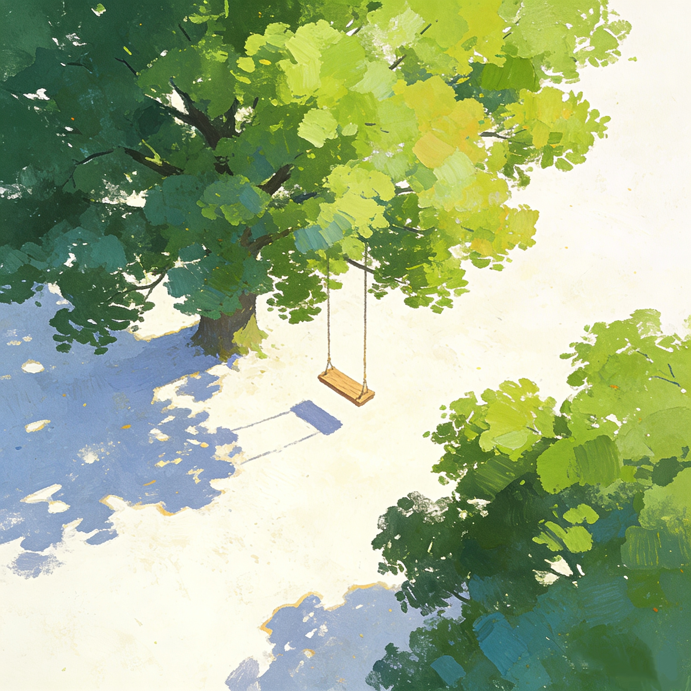

围绕不同行业老板的真实使用场景，生成短视频封面、活动海报、宣传长图，用个人网站集中展示。
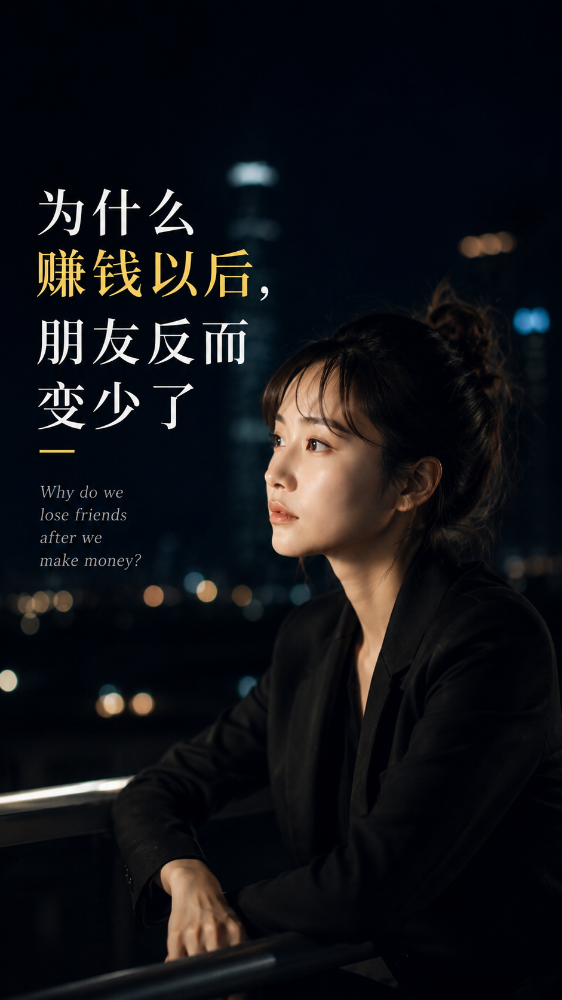
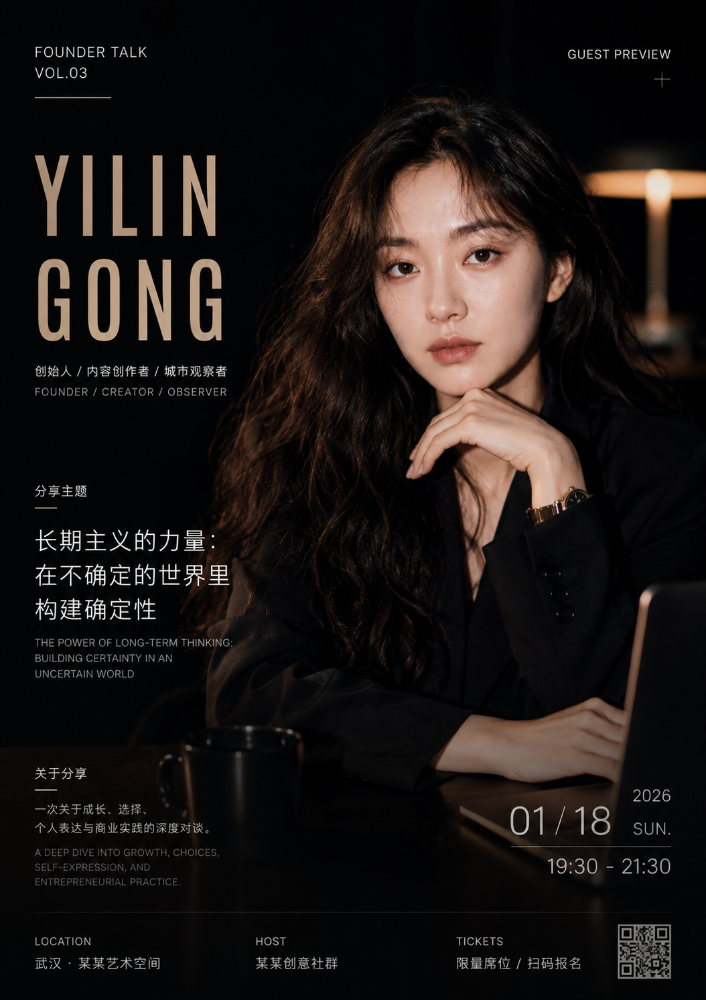
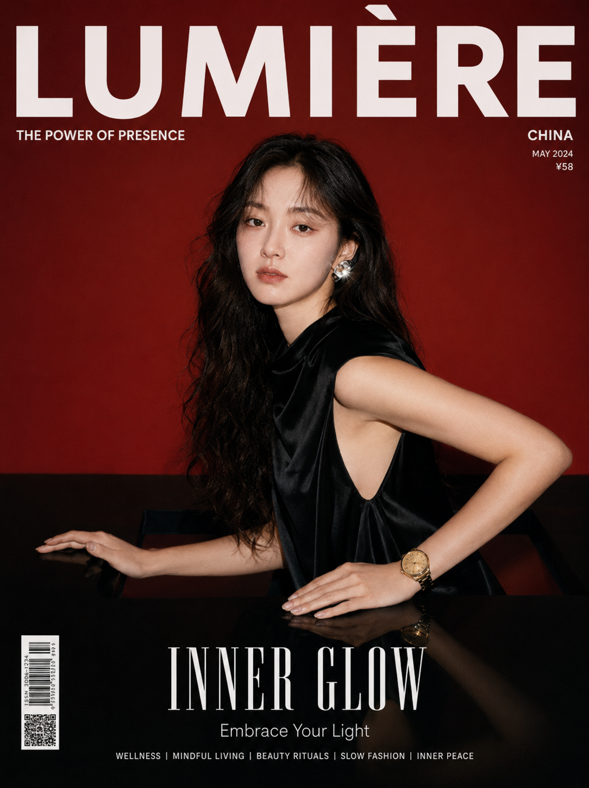
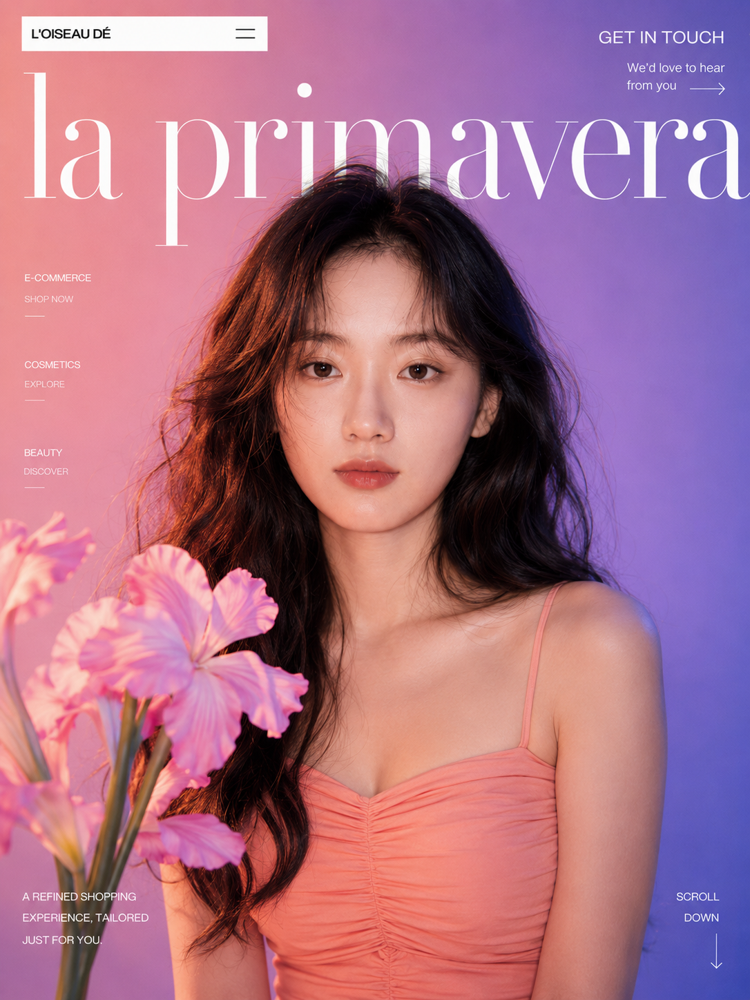
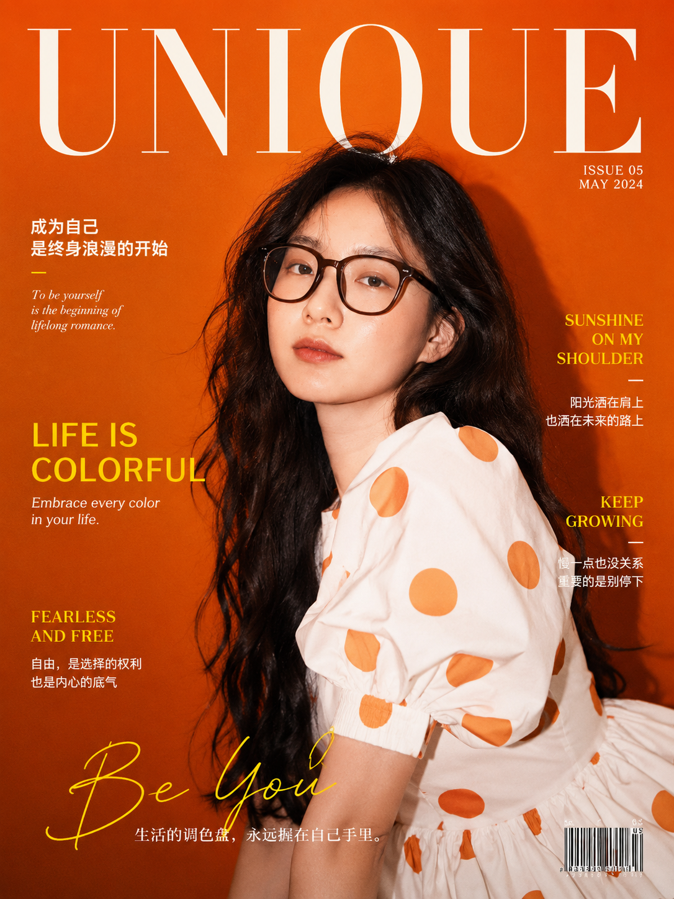
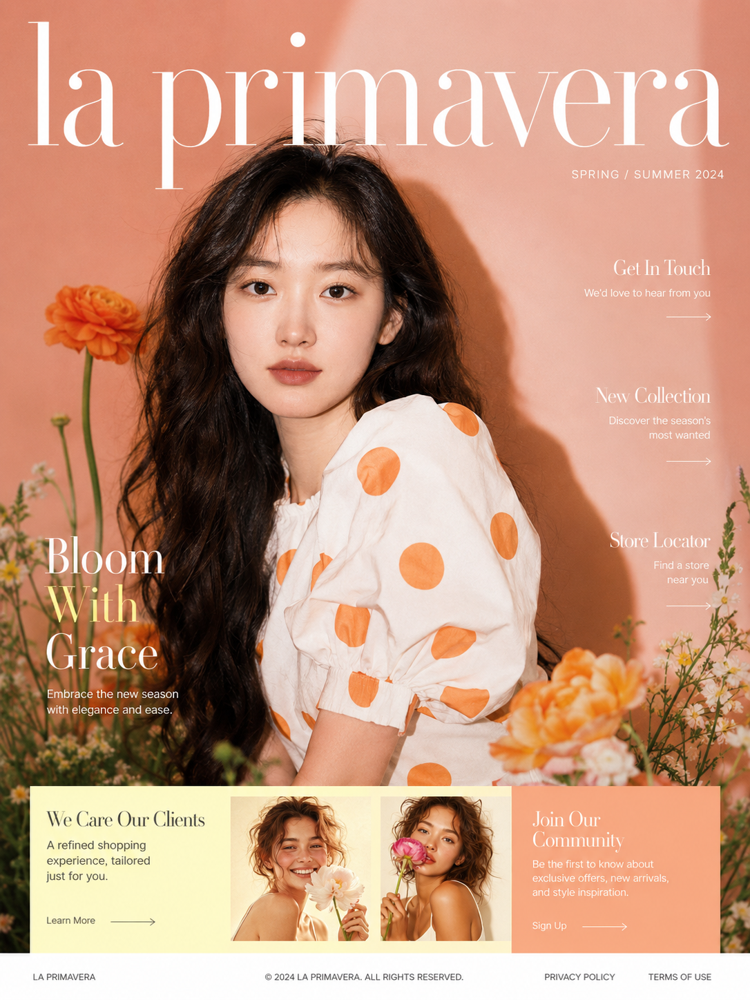
围绕旅行、审美、城市、主体性和自我整理，建立稳定的文章风格与视觉语言。
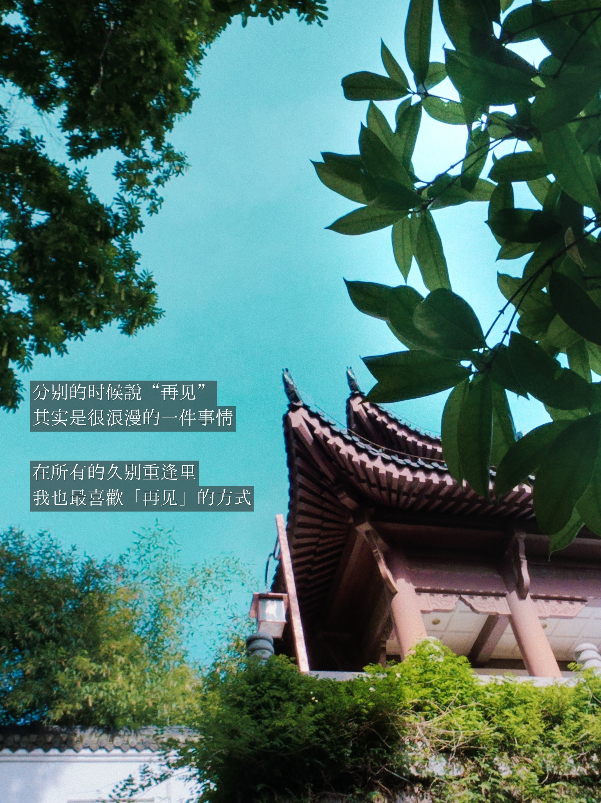


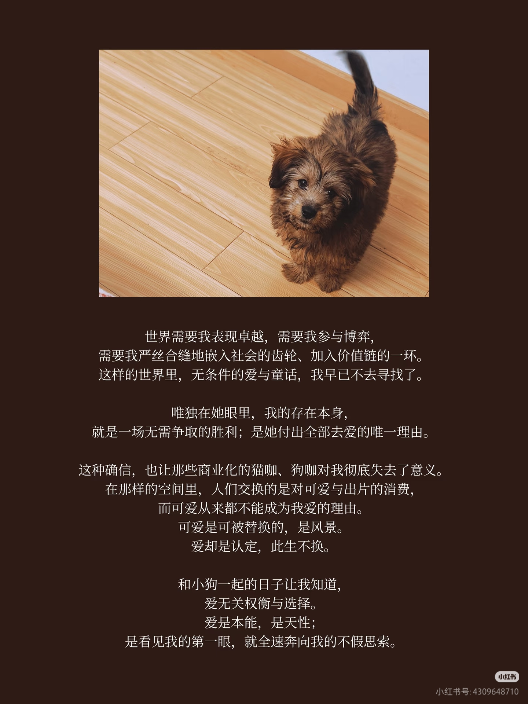
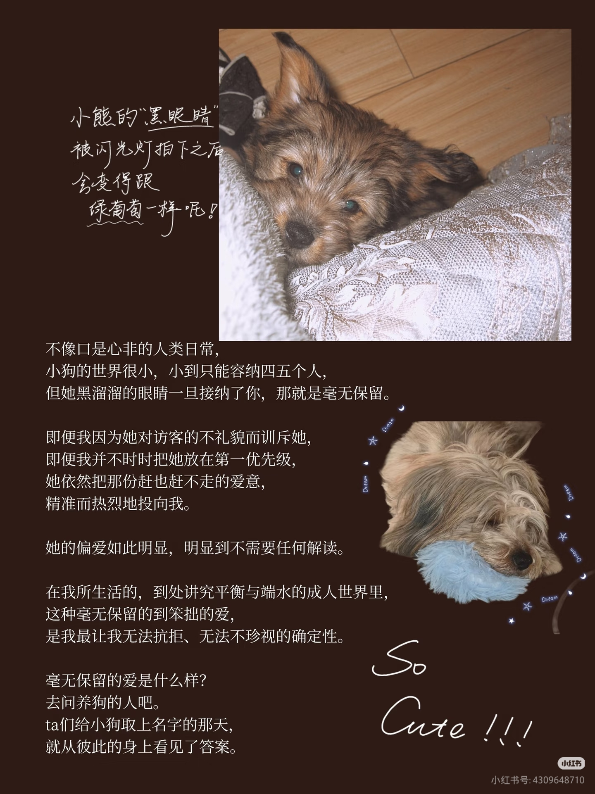
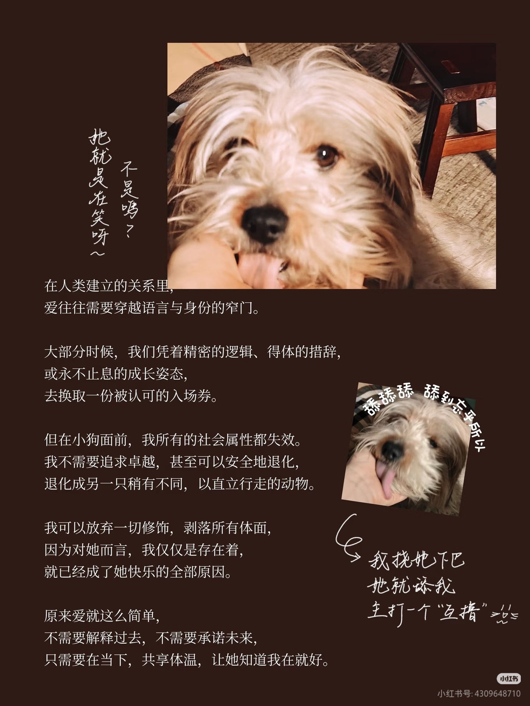
| 方向 | 我能做什么 | 工具 / 方法 | 交付物 |
|---|---|---|---|
| AI 视觉 | 封面、海报、人物风格、活动视觉 | Prompt / Image AI / Layout | 视觉套图 / 作品集页面 |
| 内容系统 | 文章栏目、社媒叙事、个人品牌表达 | Writing / SEO / Content Map | 网站文案 / 内容日历 / 栏目结构 |
| 个人网站 | 首页、项目页、博客、联系转化 | HTML / WordPress / Astra / SEO | 可上线网站 / 简历站 / 作品集 |
| 流程整理 | 把混乱流程变成清晰系统 | Notion / Automation / Workflow | 任务系统 / 数据库 / 自动化流程 |